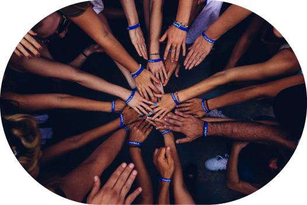

Tous bénévoles, tous solidaires !
Rejoignez la communauté Social Helperz à Rouen et rendez service aux personnes en difficultés.
Parrainage ou bénévolat, apportez-votre aide.
Conceptualisé à Rouen, Social Helperz souhaite renouveler le bénévolat local.
L'intention est de mettre en relation les personnes en difficulté et les bénévoles avec un système de
service ponctuel et renouvelable, à la disponibilité du volontaire. De plus, un système de parrainage est
mis en place afin d'accompagner et d'assister les personnes dans le besoin
La réussite et l'acceptation sociale passe notamment par l'implication de bénévoles qui donnent de leur temps pour autrui. A Rouen, nous avons la volonté de former une
communauté axée sur le bénévolat afin de transmettre au plus grand nombre le goût de l'entraide. Celles et ceux souhaiteant apporter leur aide, via le parrainage ou le bénévolat.
ou encore ceux étant dans le besoin, sont au bon endroit. Ensemble, aidons-nous.
Motivation et volonté. 2 mots piliers du bénévolat et de l’entraide. S’engager avec Social Helperz c’est mettre à disposition son temps, son énergie et ses compétences au service des autres.
Devenir bénévole c’est pouvoir proposer quotidiennement ou de manière ponctuelle, un service ou une action qu’on souhaite réaliser pour aider nos voisins Rouennais. Notre plateforme prône un système de bénévolat différenciatif. Que soit pour donner des cours de français, de proposer son aide pour faire des course, pour proposer un service tel une coiffure, un relooking etc. L’entraide chez Social Helperz prend tout les forme possible et inimaginable.
Le parrainage constitue une aide plus poussée. Il s’agit d’un accompagnement social plus complet, avec une prise en charge de la personne en besoin. Le bénévolat est poussé au paroxysme et constitue une réinsertion sociale.

A qui s’adresse Social Helperz ? Il n’y a pas de profil type, toute personne dans le besoin peut s’inscrire et recevoir de l’aide.
L’entraide. Un mot simple et fort, créateur de liens sociaux.
Certaines personnes ont besoin d’une aide plus forte pour casser la routine ou sortir de mauvaises situations. Le système de parrainage est ainsi fait pour ces situations. L’objectif est d’accompagner la personne et d’améliorer la qualité de sa vie sociale et personnelle.
Le système de service et le bénévolat, correspondent à une aide ponctuelle, adressée aux habitants de Rouen et de sa métropole.
L’aide bénévole et le support de certaines personnes peuvent être importante et constituer le début d’une nouvelle vie.
Le bénévolat devient plus gratifiant et agréable lorsque l’on peut choisir quel service rendre au moment où nous le souhaitons. Social Helperz souhaite que chacun choisisse et propose sa mission directement en lien avec le besoin des nécessitants. La flexibilité apportée permet ainsi de dynamiser le bénévolat Rouennais.
De ce fait, chaque bénévole peut proposer un service selon ses disponibilités, ses capacités et sa situation. Chaque service devient unique et constitue une nouvelle expérience sociale pour chacun des acteurs. N’oubliez pas, vous êtes les acteurs du bénévolat.